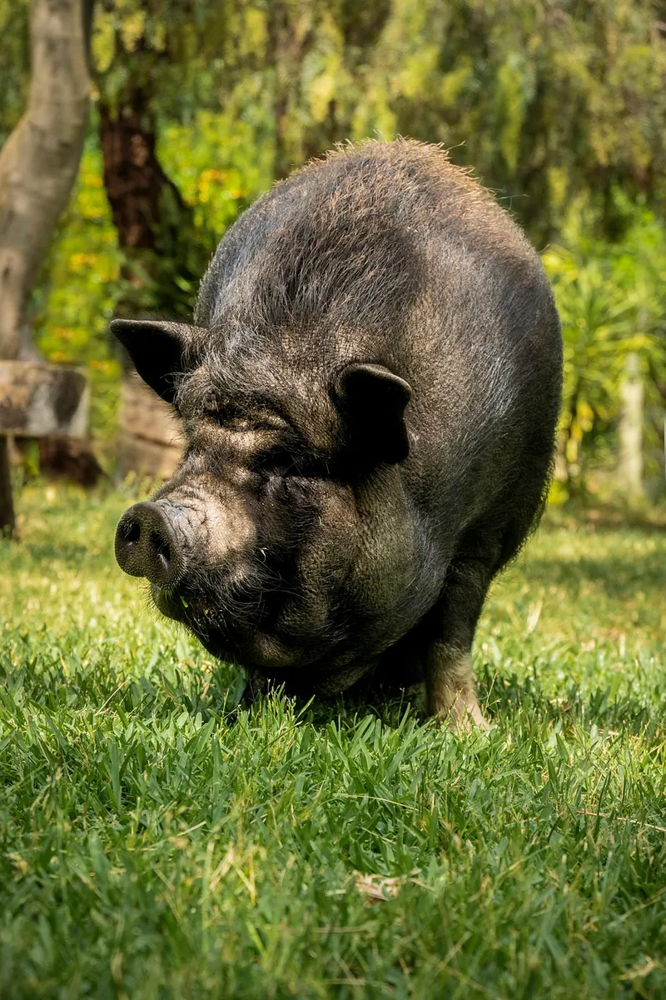
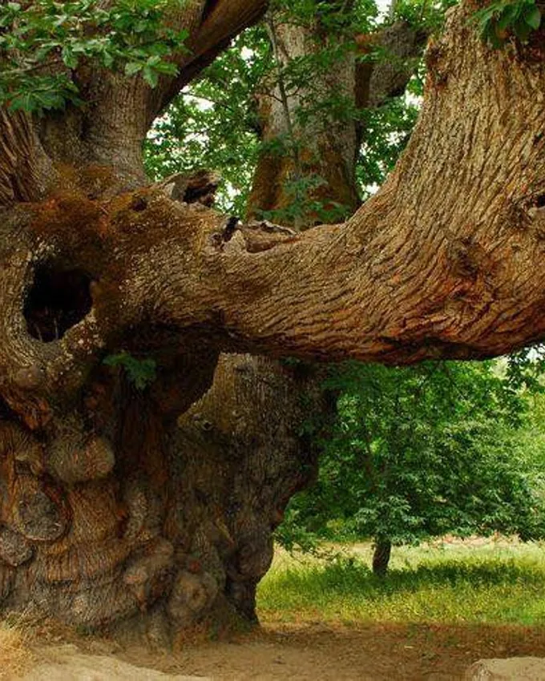
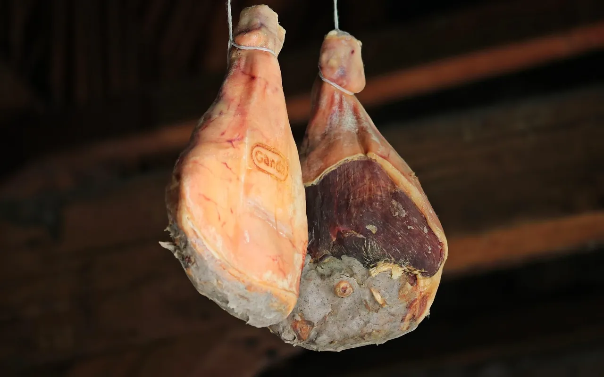
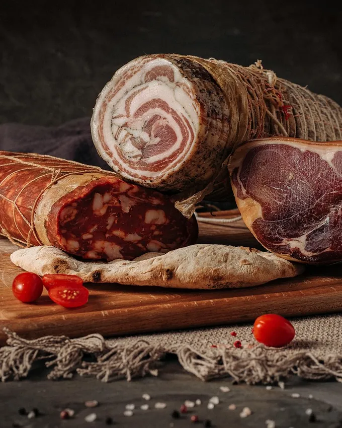

Charcuterie et farine de châtaigne
En Castagniccia, nos porcs nustrale vivent dehors, sous les châtaigniers de Piedicroce. Tout est fait ici, au feu de bois et au rythme des saisons.

De l'arbre au séchoir

OctobreSous les châtaigniers
Les porcs finissent aux châtaignes tombées ; nous ramassons les plus belles à la main.

De décembre à marsAu séchoir
Un feu de châtaignier couve des semaines sous les pièces. Puis la cave : deux ans pour le prisuttu.
Au moulin
Les châtaignes séchées passent à la meule du moulin du village : la farine de l'année.
Le calendrier des saisons
Ici, on ne trouve pas tout, tout le temps. Choisissez un mois pour voir ce qui est prêt, et où nous trouver.
Les produits
À la ferme le samedi matin, sur les marchés, ou en colis à retirer.
Pas de vente en ligne : écrivez ou appelez, nous préparons votre colis pour le samedi suivant.

Venir à la ferme
La ferme
Hameau de Castagnetu, Piedicroce, Castagniccia. Le samedi de 9 h à 12 h, et le mercredi en juillet et en août.
Les marchés
- Bastia, le samedi matin
- Corte, le vendredi matin
- Foire de la châtaigne, mi-décembre